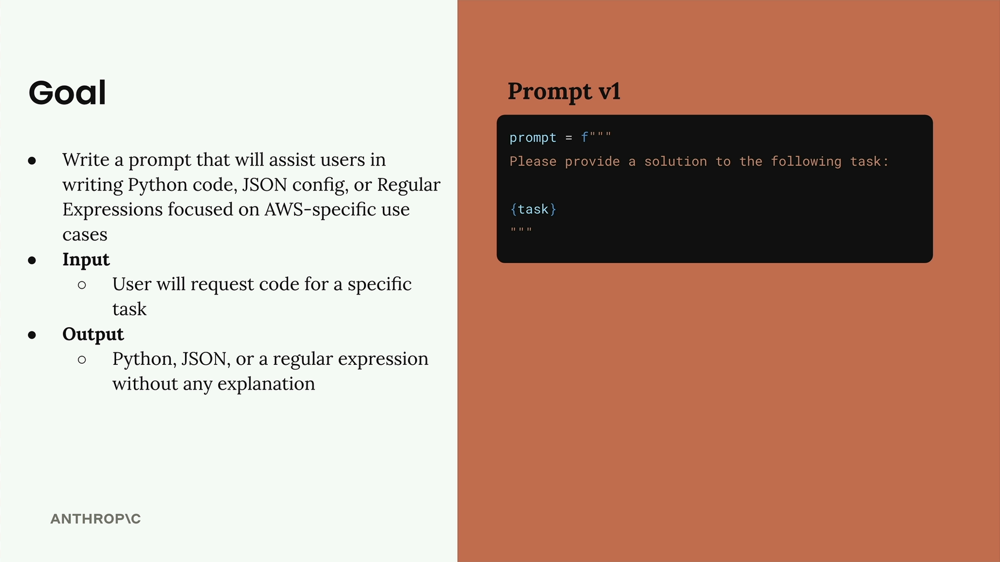
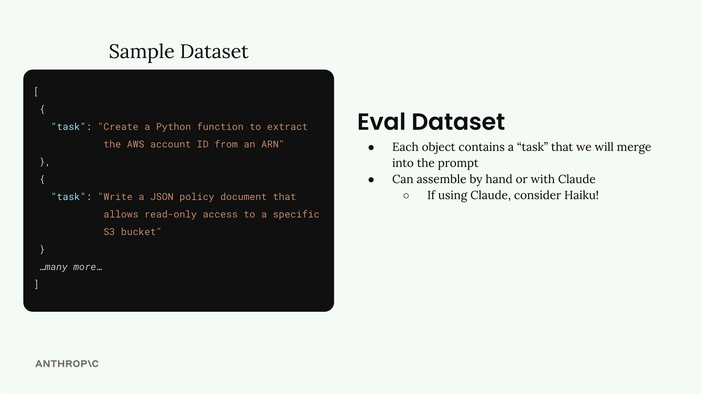

테스트 데이터셋 생성하기
커스텀 프롬프트 평가 워크플로우를 구축하려면, 먼저 탄탄한 프롬프트를 만들고 그 성능을 측정할 테스트 데이터를 생성해야 합니다. AWS 전용 코드 작성을 돕는 프롬프트에 대한 평가 시스템을 구축하는 과정을 살펴보겠습니다.
목표 설정
우리의 프롬프트는 AWS 사용 사례에 대해 다음 세 가지 유형의 출력을 작성하는 데 사용자를 도와야 합니다:
- Python 코드
- JSON 구성 파일
- 정규 표현식
핵심 요구사항은 사용자가 작업 도움을 요청할 때, 추가적인 설명이나 헤더, 푸터 없이 위 형식 중 하나로 깔끔한 출력을 반환하는 것입니다.

다음은 시작 프롬프트(버전 1)입니다:
prompt = f"""
Please provide a solution to the following task:
{task}
"""평가 데이터셋 생성
평가 데이터셋은 프롬프트에 입력할 데이터들을 담고 있습니다. 프롬프트와 입력의 각 조합에 대해 프롬프트를 실행하고 결과를 분석합니다.
데이터셋은 JSON 객체 배열로 구성되며, 각 객체에는 Claude가 수행할 작업을 설명하는 "task" 속성이 포함됩니다. 이 데이터셋은 직접 작성하거나 Claude를 활용해 자동으로 생성할 수 있습니다.

테스트 데이터를 생성하는 경우이므로, 전체 Claude 모델 대신 Haiku처럼 더 빠른 모델을 사용하기에 적합한 기회입니다.
코드로 테스트 데이터 생성하기
테스트 데이터셋을 자동으로 생성하는 함수를 만들어 보겠습니다. 먼저 Claude와 함께 사용할 헬퍼 함수들이 필요합니다:
def add_user_message(messages, text):
user_message = {"role": "user", "content": text}
messages.append(user_message)
def add_assistant_message(messages, text):
assistant_message = {"role": "assistant", "content": text}
messages.append(assistant_message)
def chat(messages, system=None, temperature=1.0, stop_sequences=[]):
params = {
"model": model,
"max_tokens": 1000,
"messages": messages,
"temperature": temperature
}
if system:
params["system"] = system
if stop_sequences:
params["stop_sequences"] = stop_sequences
response = client.messages.create(**params)
return response.content[0].text이제 데이터셋 생성 함수를 작성하겠습니다:
def generate_dataset():
prompt = """
Generate an evaluation dataset for a prompt evaluation. The dataset will be used to evaluate prompts that generate Python, JSON, or Regex specifically for AWS-related tasks. Generate an array of JSON objects, each representing task that requires Python, JSON, or a Regex to complete.
Example output:
```json
[
{
"task": "Description of task",
},
...additional
]
```
* Focus on tasks that can be solved by writing a single Python function, a single JSON object, or a single regex
* Focus on tasks that do not require writing much code
Please generate 3 objects.
"""JSON 응답을 올바르게 파싱하기 위해 프리필링(prefilling)과 중지 시퀀스(stop sequences)를 사용합니다:
messages = []
add_user_message(messages, prompt)
add_assistant_message(messages, "```json")
text = chat(messages, stop_sequences=["```"])
return json.loads(text)데이터셋 생성 테스트
함수를 실행하여 어떤 테스트 케이스가 생성되는지 확인해 보겠습니다:
dataset = generate_dataset()
print(dataset)이 코드는 목표 출력 유형인 Python 함수, JSON 구성, AWS 전용 작업을 위한 정규 표현식을 각각 다루는 세 가지 테스트 케이스를 반환해야 합니다.
데이터셋 저장
데이터셋이 준비되면, 나중에 평가 시 쉽게 불러올 수 있도록 파일로 저장합니다:
with open('dataset.json', 'w') as f:
json.dump(dataset, f, indent=2)
이 코드는 노트북과 같은 디렉터리에 dataset.json 파일을 생성하며, 프롬프트 평가에 사용할 작업 목록이 담겨 있습니다.
이 기반을 갖추면, 다양한 AWS 관련 코딩 작업에서 프롬프트의 성능을 체계적으로 평가하기 위한 테스트 데이터를 생성할 수 있습니다.